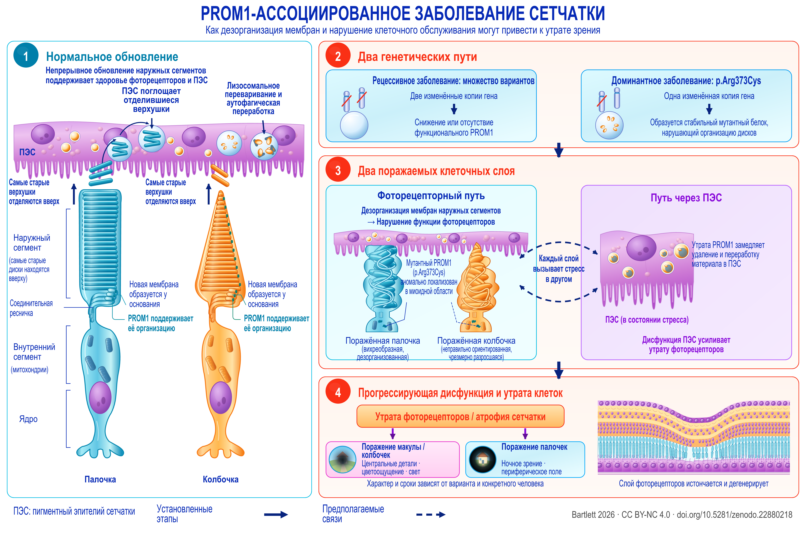

Review
PROM1-ассоциированная дегенерация сетчатки
Карта доказательств по механизмам, вмешательствам и исследовательским приоритетам с учётом аллельных различий
English title: PROM1-associated retinal degeneration
Working paper, version 1.90, 21 September 2026.
The Zenodo record also holds an accessible HTML edition, a spoken-text version, a description of the figure and an audiobook.
Abstract
PROM1-ассоциированная дегенерация сетчатки включает доминантное поражение макулы и рецессивную, нередко более распространённую дегенерацию фоторецепторов. Разные типы наследования и клинические проявления этих состояний ставят разные вопросы о механизмах и лечении. Настоящий обзор и карта доказательств объединяют клиническую генетику, естественное течение заболевания, биологию мембран, модели фоторецепторов и пигментного эпителия сетчатки (ПЭС; RPE), доклинические вмешательства и датированные записи об исследованиях с участием людей. Наиболее значимое достижение на пути к клиническому применению — экспериментальная коррекция нарушений в системах с дефицитом PROM1, показанная в органоидах, полученных из клеток пациентов, и у нокаутных мышей. О положительном эффекте лечения после начала заболевания сообщается в полнотекстовой работе на мышах и в отдельных тезисах конференции. Главный нерешённый вопрос переноса результатов касается заболевания, обусловленного доминантным мутантным аллелем: здесь необходимо напрямую сравнить генную аугментацию (добавление функциональной копии гена), подавление мутантного продукта и комбинированное лечение. Литература о механизмах выходит за пределы морфогенеза наружных сегментов: прямые эксперименты на ПЭС указывают на роль аутофагического потока и клиренса наружных сегментов, а светочувствительные нокаутные модели — на участие эндотелина, инсулиноподобного фактора роста 1 (IGF1) и метаболического стресса. Эти пути требуют интерпретации с учётом конкретного клеточного компартмента. Данные количественной аутофлуоресценции у людей ограничивают применимость универсального объяснения через избыток бисретиноидов, а защитные эффекты локального эндотелина при других генетических формах поражения сетчатки не позволяют считать этот путь неизменно вредным. Соответственно стратифицированы и клинические конечные точки: расширение атрофии при доминантной форме, сокращение протяжённости эллипсоидной зоны при рецессивной форме и послойное истончение по данным оптической когерентной томографии (ОКТ) отражают разные процессы и имеют разные эффекты нижнего предела измерения. Исследования с участием людей, в которых генетические критерии включения сформулированы прямо или более широко, могут допускать пациентов с PROM1-ассоциированным заболеванием, однако в большинстве случаев записи показывают, кто мог участвовать, а не кто действительно участвовал и каковы были результаты. Семь экспериментальных программ связывают эти различия с проверяемыми сравнениями; для каждой обозначены решающее сравнение, необходимая защита от ошибочной интерпретации и вопрос, который она позволила бы решить. Полученная схема разграничивает потенциальные методы лечения по аллелю, клеточному компартменту и стадии заболевания.


Description of the figure
PROM1-ассоциированное заболевание сетчатки. Рабочая модель заболевания в соответствии с современными представлениями: обновление наружных сегментов и факторы, которые его нарушают (1, 2), два поражаемых клеточных компартмента (3) и последующая утрата зрения (4). Пунктиром обозначено предполагаемое, а не установленное. Доказательства для каждого элемента приведены в разделах 3–10.
Панель 1. Нормальное обновление. Под пигментным эпителием сетчатки рядом расположены два фоторецептора — палочка и колбочка. На каждом сверху вниз подписаны: наружный сегмент, вверху которого находятся самые старые диски; соединительная ресничка; внутренний сегмент, содержащий митохондрии; ядро. Новая мембрана образуется у основания каждого наружного сегмента, а PROM1 поддерживает её организацию; при этом самые старые верхушки отделяются в направлении вверх. Пигментный эпителий сетчатки поглощает эти отделившиеся верхушки и расщепляет их посредством лизосомального переваривания и аутофагической переработки.
Панель 2. Два генетических пути. Слева — рецессивное заболевание: множество различных вариантов, две изменённые копии гена, что приводит к снижению количества или отсутствию функционального PROM1. Справа — доминантное заболевание, p.Arg373Cys: одна изменённая копия гена, с которой образуется стабильный мутантный белок, нарушающий организацию дисков.
Панель 3. Два поражаемых клеточных слоя. Слева — фоторецепторный путь: дезорганизация мембран наружных сегментов ведёт к нарушению функции фоторецепторов. Поражённая палочка изображена вихреобразной и дезорганизованной, поражённая колбочка — неправильно ориентированной и чрезмерно разросшейся; мутантный PROM1, p.Arg373Cys, аномально локализован в миоидной области. Справа — путь через пигментный эпителий сетчатки: утрата PROM1 замедляет процессы удаления и переработки материала в этом слое; слой показан в состоянии стресса, а его дисфункция усиливает утрату фоторецепторов. Между двумя блоками проходят изогнутые пунктирные стрелки с надписью «Каждый слой вызывает стресс в другом»; пунктир означает предполагаемое, а не установленное.
Панель 4. Прогрессирующая дисфункция и утрата клеток. Затем следуют утрата фоторецепторов и атрофия сетчатки, разветвляющиеся на два направления: поражение макулы и колбочек, затрагивающее различение деталей в центральном поле зрения, цветоощущение и чувствительность к свету; и поражение палочек, затрагивающее ночное зрение и периферическое поле зрения. Характер и сроки изменений зависят от варианта и конкретного человека. На расположенном рядом поперечном срезе показаны истончение и дегенерация слоя фоторецепторов.
Условные обозначения. Сплошные стрелки обозначают установленные этапы. Пунктирные линии и стрелки — предполагаемые.
Download the figure (PNG, 5400 × 3600 pixels, CC BY-NC 4.0)
How to cite
Bartlett C. PROM1-ассоциированная дегенерация сетчатки: Карта доказательств по механизмам, вмешательствам и исследовательским приоритетам с учётом аллельных различий. Version 1.90. Zenodo, 21 September 2026. https://doi.org/10.5281/zenodo.22880218